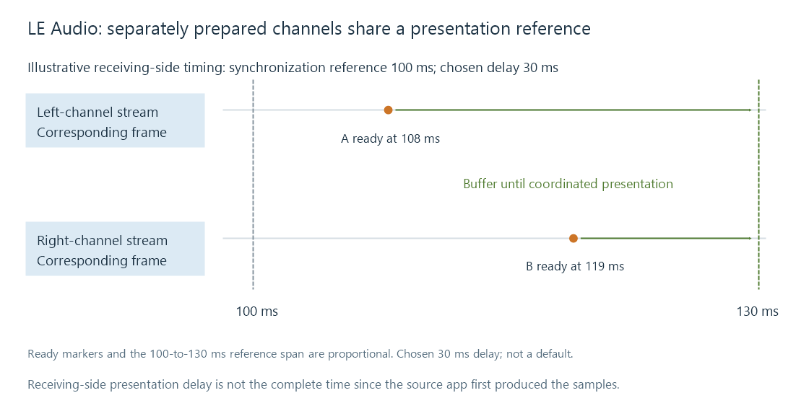

Bluetooth LE Audio
Bluetooth LE Audio combines LC3 coding, isochronous streams, and audio control profiles to coordinate unicast or broadcast sound.
Bluetooth LE Audio is an audio architecture built on Bluetooth Low Energy isochronous streams, with LC3 as its baseline codec and profiles for audio discovery, configuration and control.
It enables audio to be organized into coordinated streams—for example, a stream for each earbud—and supports both connected unicast audio and broadcast audio. A device's Bluetooth version alone does not establish support for the complete audio architecture. The radio, host software, profiles and receiving device all need the relevant capabilities.
Coordinated streams can have separate destinations
For unicast, Connected Isochronous Streams (CIS) belong to a Connected Isochronous Group (CIG). Broadcast uses Broadcast Isochronous Streams (BIS) organized in a Broadcast Isochronous Group (BIG).
The groups provide transport timing relationships. Audio capabilities and controls determine which channels and configurations those streams represent. A stream identifier is not automatically a left/right label; channel allocation and the chosen audio configuration supply that meaning.

This arrangement allows a transmitter to supply coordinated devices directly. The device set and selected topology determine the actual delivery; the diagram does not claim that every headset uses this exact route.
LC3 frame duration and payload size
LC3 encodes a block of audio into a codec frame. At 48 kHz, 10 ms contains 480 sample frames per channel, while 7.5 ms contains 360.
The coded frame's byte count determines its payload bitrate. Two example 48 kHz configurations from the Basic Audio Profile are:
| Frame interval | Samples per channel | Encoded bytes per channel per frame | Codec payload bitrate per channel |
|---|---|---|---|
| 10 ms | 480 | 100 | 80 kbit/s |
| 7.5 ms | 360 | 75 | 80 kbit/s |
For the 10 ms case, 100 bytes × 8 bits / 0.010 s = 80,000 bit/s. Two channels using that configuration total 160 kbit/s of codec payload. That excludes transport headers, retransmissions and other radio overhead.
For an Emby route, these byte counts concern the client's wireless encoding stage. The file codec delivered by the media server is upstream of that stage.
Holding bitrate constant while shortening the frame reduces the bytes per frame. Holding bytes constant would instead increase bitrate. The negotiated codec and transport configuration must be supported; the frame interval cannot be changed independently of all other parameters.
The 48 kHz assumption matters. Some other sample-rate configurations have a different relationship between nominal frame-duration labels and their effective duration, as specified in the profile.
A shared presentation time is not zero latency
Two earbuds should reproduce corresponding left and right samples at the intended common instant. The audio framework's Presentation_Delay relates presentation to a defined transport synchronization reference and accounts for receiving-side capabilities and processing.
Consider an abstract frame with synchronization reference 100 ms. If the chosen presentation delay is 30 ms, its intended presentation starts at 130 ms. Earbud A may finish preparing its audio earlier than earbud B; buffering allows both to wait for that scheduled instant.
This is a synchronization example, not a default LE Audio delay. It also does not measure all the time since an Emby app first decoded the samples. Source-side preparation and queues can occur before the transport reference.
A small codec frame can help a low-delay design, but frame duration, transport robustness, processing time and presentation delay are separate contributors. Receiver coordination addresses their relative presentation; movie lip sync also needs the overall delay accounted for against video.
Unicast and broadcast have different control models
A unicast audio configuration establishes connected streams with selected receiving devices and can support bidirectional use cases. Broadcast distributes streams that compatible receivers can discover and join. Auracast refers to the public broadcast audio ecosystem built on this architecture.
Broadcast is not simply pairing the same transmitter separately to an unlimited list of headphones. Discovery, stream descriptions, synchronization and any broadcast access requirements form another route.